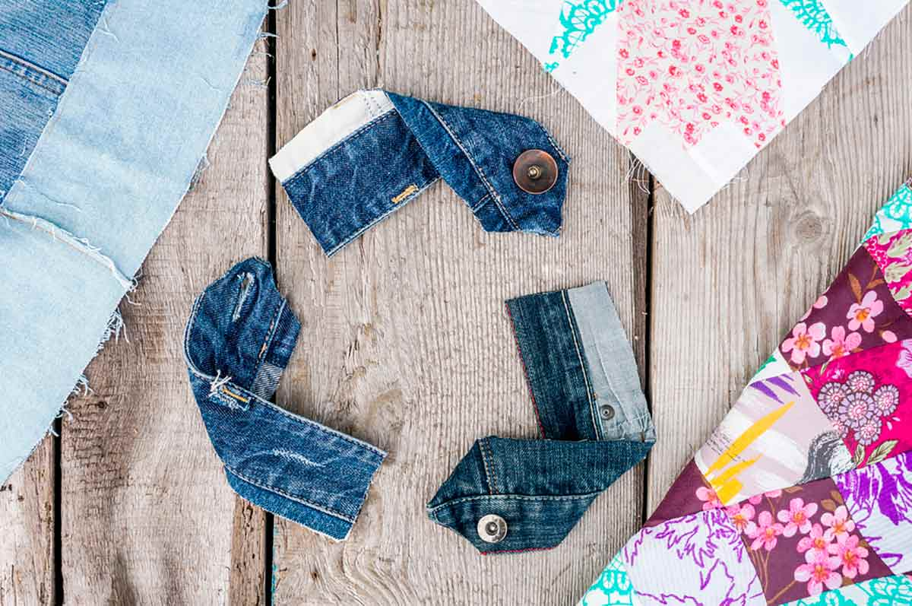

Comprar roupas em brechó está se tornando mais comum à medida que o tempo passa.
Apesar de muitos brechós ainda serem escuros e desorganizados, esses detalhes estão mudando para melhor,
fazendo com que mais pessoas comecem a ir nesses locais para comprar suas peças de roupas.
Os brechós são verdadeiros tesouros escondidos, oferecendo roupas e acessórios únicos a preços acessíveis.
Mais do que apenas uma opção econômica, eles desempenham um papel crucial na promoção da sustentabilidade.
Ao optarmos por comprar peças de segunda mão, estamos estendendo o ciclo de vida das roupas, reduzindo o desperdício têxtil e diminuindo a demanda por novos produtos,
o que, por sua vez, reduz a pressão sobre os recursos naturais e a poluição gerada pela indústria da moda. Além disso,
os brechós incentivam a criatividade e a expressão individual, permitindo que cada pessoa crie seu estilo de forma única e consciente,
contribuindo para um mundo mais sustentável e diversificado.
Brechós são mais do que lojas de roupas usadas; eles oferecem uma maneira sustentável de consumir moda, promovendo a reutilização e reduzindo o desperdício.
Além disso, são ótimos para encontrar peças únicas e expressar individualidade no estilo. Ter um brechó no seu ambiente pode agregar diversidade, promover práticas de consumo consciente e até mesmo apoiar causas sociais, dependendo do foco da loja.

No contexto atual, a moda reutilizada emerge como uma resposta consciente aos desafios ambientais que nosso planeta
enfrenta. O ciclo rápido de produção e descarte de roupas tem gerado impactos significativos no meio ambiente, desde a utilização excessiva de recursos naturais até a geração de resíduos tóxicos.
Em contrapartida, a moda reutilizada se destaca como uma alternativa que não apenas respeita os limites do nosso ecossistema, mas também promove uma abordagem mais ética e sustentável para o mundo da moda.
o optar por roupas de segunda mão, seja por meio de brechós, trocas ou upcycling, os consumidores estão contribuindo para a redução da
demanda por novas produções. Isso implica em uma menor pressão sobre os recursos naturais, como água e energia, que são intensivamente utilizados na fabricação de novas peças.
Além disso, ao prolongar a vida útil das roupas, estamos minimizando a quantidade de resíduos têxteis que acabam nos aterros sanitários, muitas vezes poluindo o solo e os recursos hídricos.
A moda reutilizada também oferece uma oportunidade única para expressar individualidade e estilo de maneira única. Peças vintage, encontradas em brechós,
frequentemente carregam consigo histórias e design atemporais, agregando valor emocional às escolhas de moda. A reinvenção de roupas antigas através do upcycling não apenas reduz o desperdício,
mas também cria peças únicas e personalizadas, promovendo a criatividade e a originalidade.
Além disso, o movimento em direção à moda reutilizada desafia a cultura do consumo rápido e descarte,
incentivando uma abordagem mais consciente e deliberada em relação às escolhas de moda.
Ao investir em peças de qualidade, duráveis e atemporais, os consumidores estão promovendo um estilo de vida sustentável que transcende as tendências efêmeras da indústria da moda convencional.
Em resumo, a moda reutilizada não é apenas uma declaração de moda, mas uma escolha que reflete um compromisso com a preservação do meio ambiente. Ao abraçar essa abordagem, os consumidores não apenas moldam seu estilo, mas também contribuem positivamente para a saúde e sustentabilidade do nosso planeta. A moda reutilizada não é apenas uma tendência, mas uma evolução necessária em direção a um futuro onde a elegância coexiste harmoniosamente com a responsabilidade ambiental.